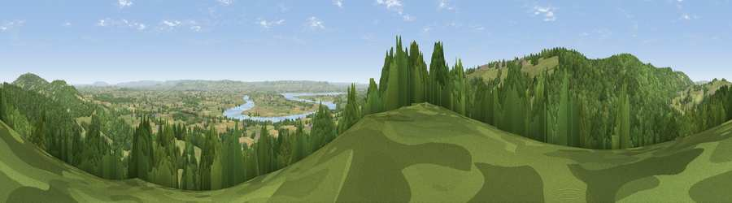

Viewpoint near Popes Hill
#5679 in England · top 13% of its area beats it · near Popes HillThe view, rendered

A 360° render of this exact spot computed from the terrain model, tree cover and land cover — summer colours, afternoon light, calibrated against photographs of famous viewpoints. Real trees, hedges and buildings will differ in detail.
The panorama
Grey silhouette: terrain skyline in each direction (720 bearings, Earth curvature and refraction included). Dashed green: skyline with trees (+15 m) and buildings (+8 m) as obstacles. Blue strip: how far the ground is visible on each bearing.
Where the view opens
Wedge length = distance to the farthest visible ground on that bearing (vegetation-aware). Rings at 10, 25 and 50 km.
What fills the view
47% grassland · 39% woodland · 10% cropland · 3% water · 1% built-up
Angular shares of the visible panorama (visual magnitude), not map area. Landscape diversity 0.49 (0–1 Shannon).
Key numbers
More beautiful places nearby
The staircase of upgrades: each row has a higher view potential than everything closer. Driving times are estimates from straight-line distance, calibrated against real road routing — check an actual route before setting out.
| Place | Direction | Drive | Score |
|---|---|---|---|
| Viewpoint near Littledean | SSW · 1 km | ~3 min | 73.8 |
| Viewpoint near Huntley | NNE · 5 km | ~11 min | 75.0 |
| Viewpoint near May Hill | NNE · 7 km | ~14 min | 76.1 |
| Chase Wood Hill | NW · 11 km | ~21 min | 77.6 |
| Viewpoint near Whaddon | E · 16 km | ~28 min | 77.7 |
| Viewpoint near Stinchcombe | SSE · 17 km | ~30 min | 79.4 |
| Viewpoint near Stinchcombe | SSE · 18 km | ~30 min | 80.5 |
| Viewpoint near Woolhope | NNW · 20 km | ~34 min | 80.7 |
51.82920, -2.46684 · source: screening · position refined by local search. Computed location — check access rights before visiting.